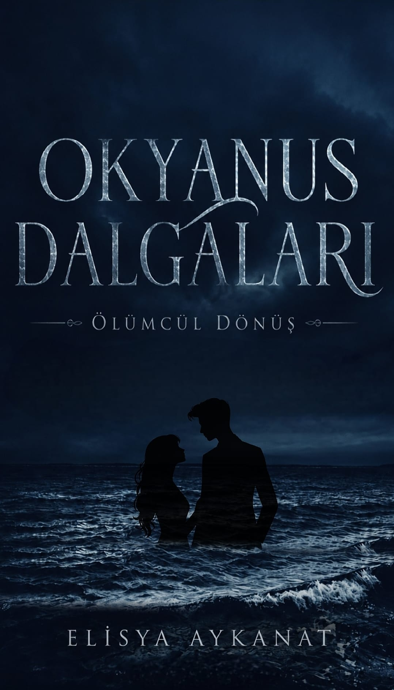

ELISIA'NIN KİTABI
Okyanus Dalgaları
Cinayet · Aksiyon · Dram
Rusya'nın en başarılı yazılım mühendislerinden Natalia Deesmi, kendisinin bile bilmediği gerçekler yüzünden bir örgüt tarafından tutsak edilir. Peki bu örgütün Natalia'dan isteği nedir? Natalia, oradan kurtulabilecek ve gerçekleri öğrenebilecek midir?
Okumaya Başla →OKUMA LİSTESİ
Bölümler
OKYANUS DALGALARI
Her dalganın altında başka bir gerçek var.
Natalia'nın hikâyesine eşlik et ve okyanusun karanlık sularında gerçeğin peşine düş.